For this Intro to Fabrication project, we had to make five of something. I thought about this a while, wondering what I needed. Soap holders? Phone holders? Picture frames? As it turns out I do need soap holders, but I only realized that after I started making smiley faces, so this project is five smiley faces! Because I think you can't go wrong making smiley faces, just to bring some more joy into the world. :)
Part of the reason I decided on smileys is because I wanted to make something that would use every machine in the wood shop, since it seemed in the spirit of this week's lesson. First, I went out and bought a big piece of wood -- more than I needed, but always buy more than you need!
I cut this huge piece of wood in half and prepared to start drilling out my smileys. To do this, I attached a 3 and 3/4 inch hole saw to the drill press, clamped my wood down, and started drilling.
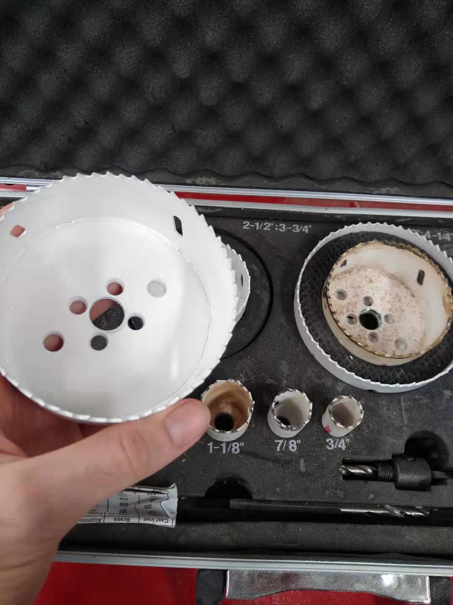 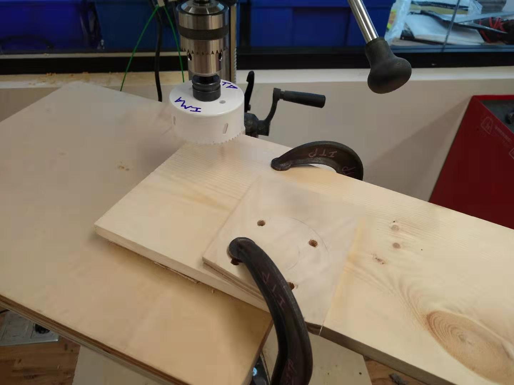Partway through cutting out my smileys, I realized screw clamps are amazing and started using them instead. Much better.
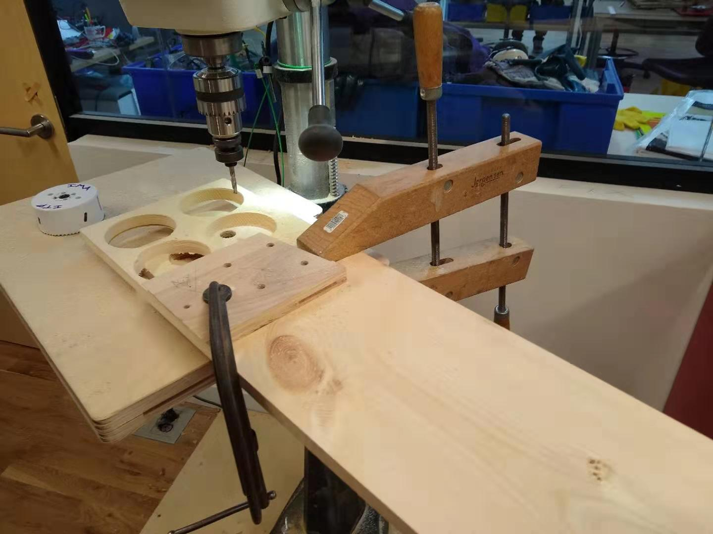At this point I had four circles of wood. I rigged a jig up so I could slide my smileys in and start drilling the eyes. I would slide a smiley in, drill halfway through the wood to give the impression of an eyehole, then rotate the smiley ninety degrees and drill the other eye. Jigs sped it up a lot! Because I wasn't drilling all the way through, I didn't put a board underneath.
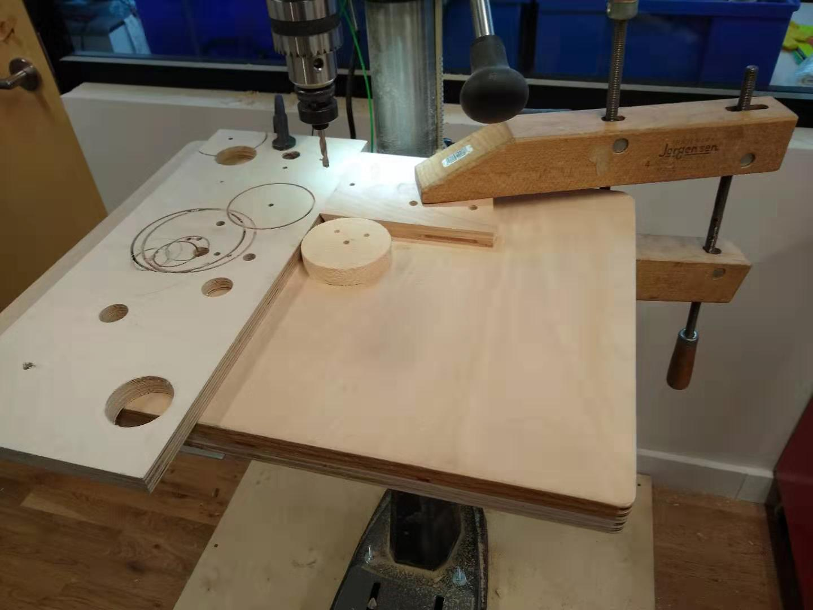To drill the mouths I wanted to use the scroll saw (this thing is honestly the most terrifying one to me). To drill from inside the smiley John told me I needed a quarter inch hole to drill from, so I drilled two quarter inch holes in my smileys so I could use them as guideposts for the mouths. This meant, of course, more jigs.
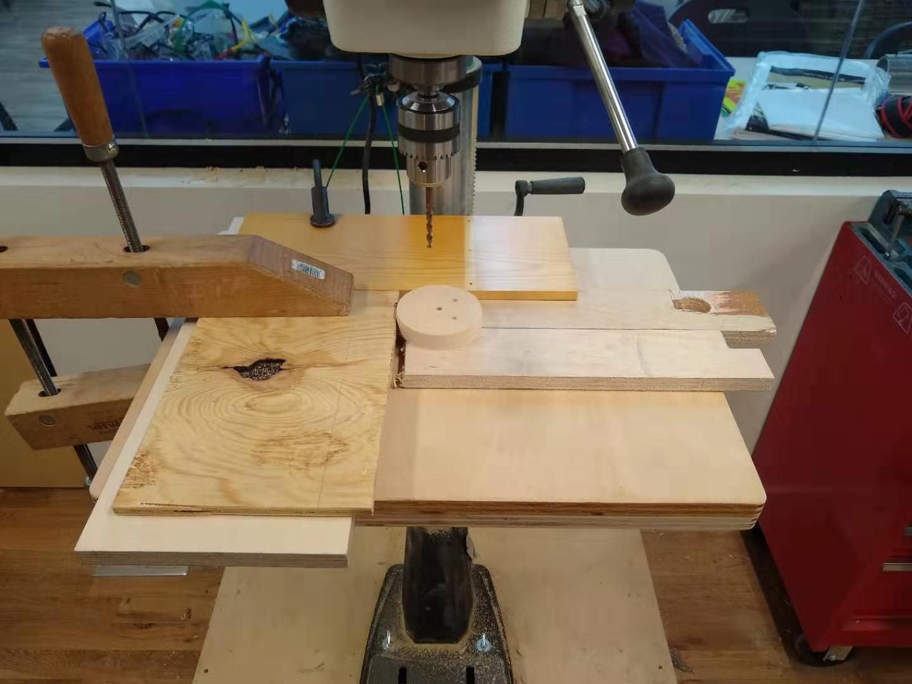I had a bit of a hard time figuring out where to drill the mouth each time, then had (what seemed to me) like a brilliant idea. Why not line the smileys up on top of each other so that all the other holes aligned, then drill through the top hole mouth into the bottom, so that way the mouths would align? This... kind of worked.
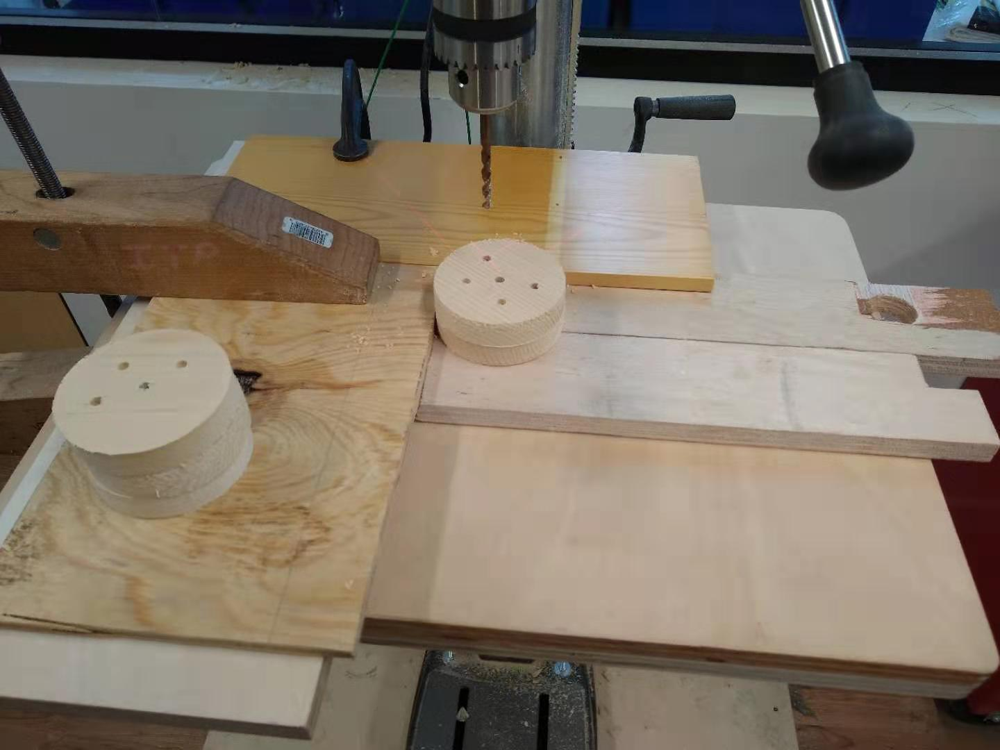After all the holes were drilled for the mouths, it was time to take them to the scroll saw. I drew guidelines between the mouth holes so I could saw through the lines for the mouths, forgetting that I am a terrible drawer with no ability to keep my hands still, which meant the guide lines looked not so great.
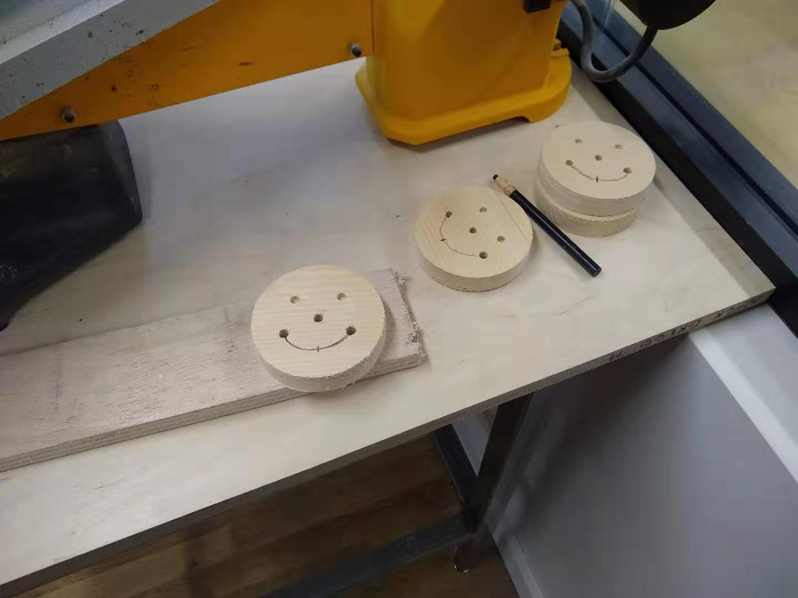The scroll saw needed to be adjusted a few times, but once I finally figured out how to do it I sawed through the mouths. This also didn't go perfectly, but they were all smmiling at least.
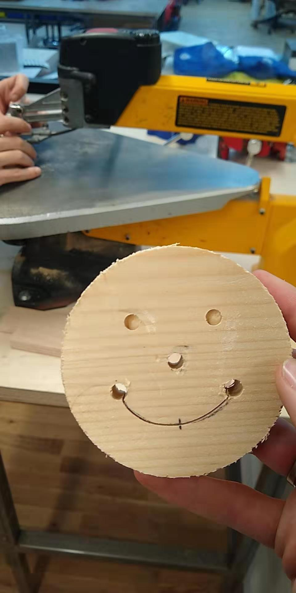After this, I took the smileys to the belt sander. I sanded off the frontmost part of the face so there would be no pencil lines left, then sanded all around the edges and back so that they were nice and smooth and wouldn't give anyone a splinter.
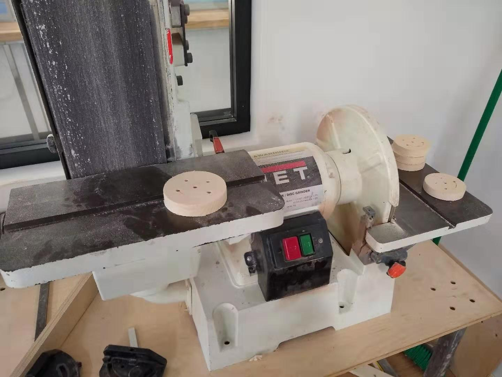Though I technically had five smileys on my hands at this point, I wanted to go a bit further and drill the eyes bigger, since most smileys have big eyes. I chose a 3/4 inch circular bit to drill and lined the smileys up on the drill press. Since I already had a hole for the eyes, I didn't need a jig or anything.
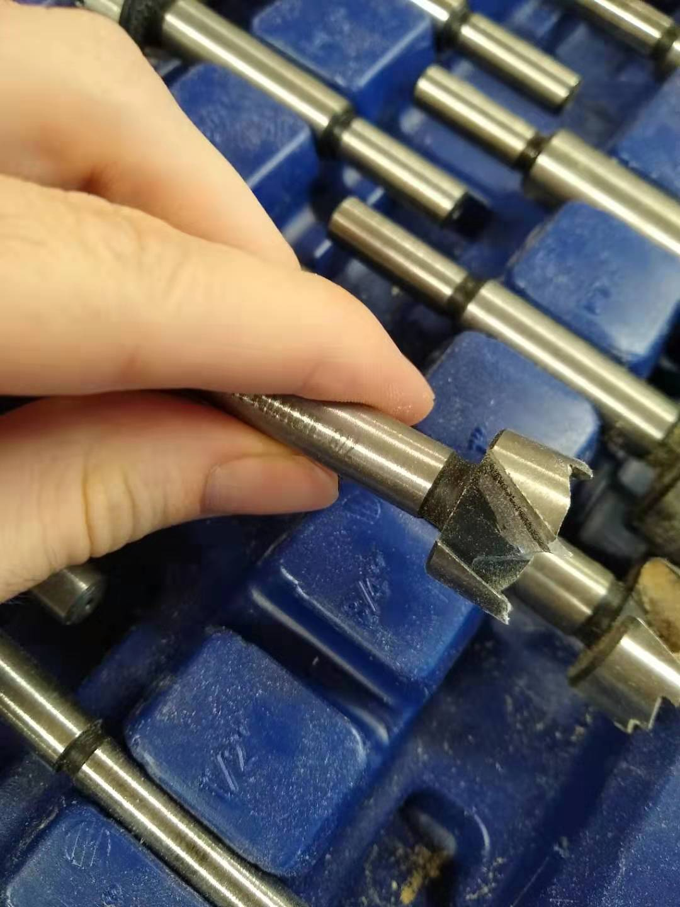The result was... not what I expected. To be frank, my smileys looked incredibly creepy. There were a couple of things I could do about this. I could just drill all the way through the eyes, which would probably look better. But I had a different idea. Since Halloween was coming up, why not rebrand. So these are no longer smileys. They are Halloween decorations! Give one to your kid and give them some paint, and they can turn it into a vampire or ghost or skeleton! Perfect.
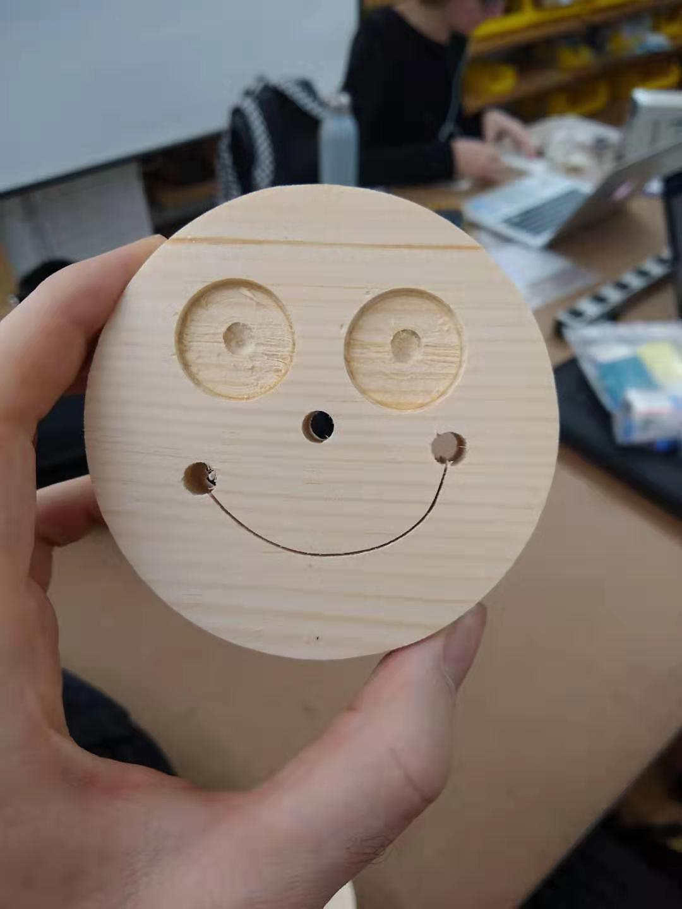 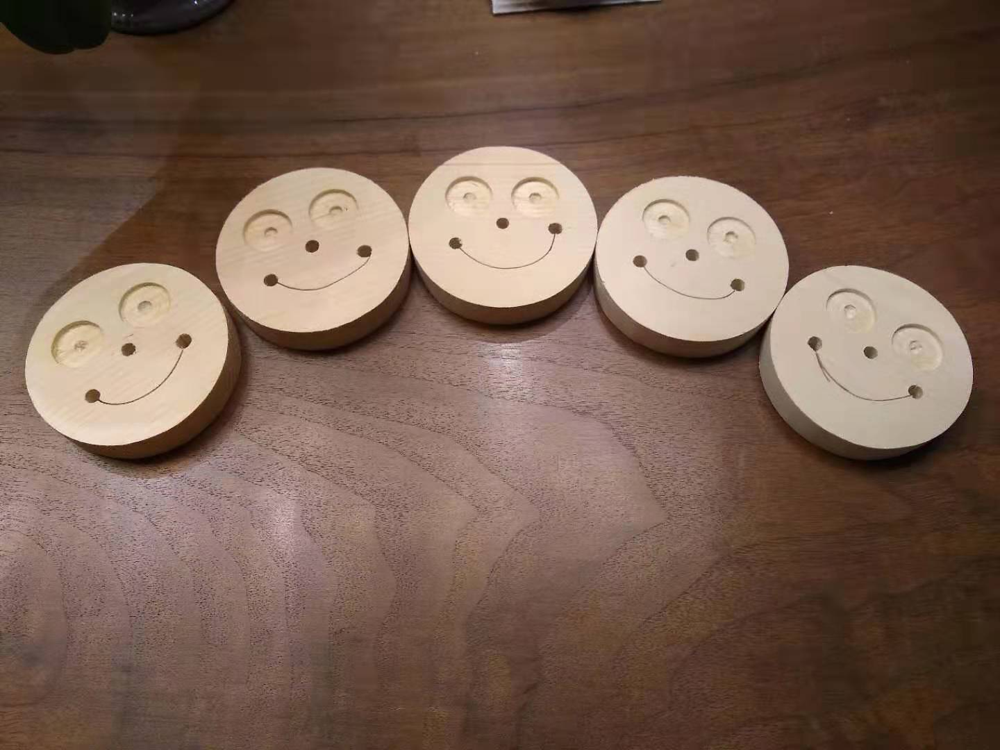